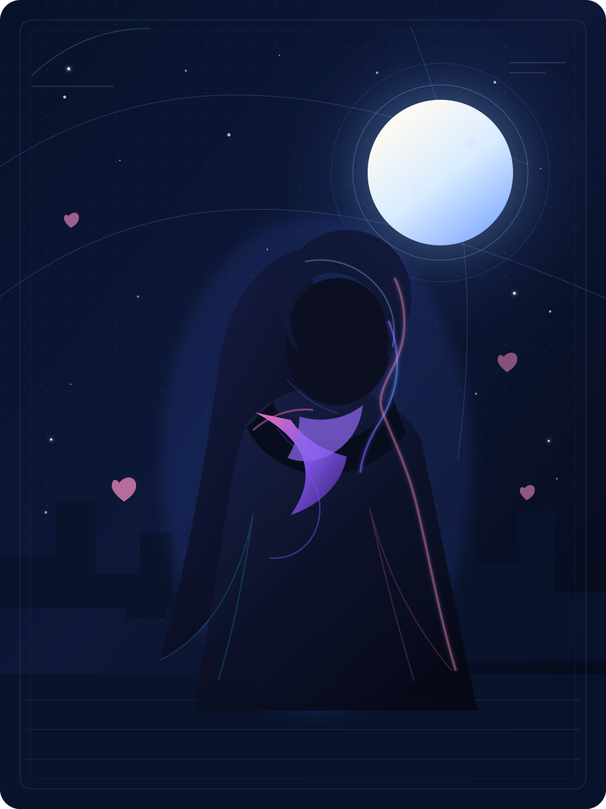

雨
看到第 06 话
雨停之后
剩余 18 分钟
BEFORE THE STARS FALL
一间只在深夜营业的邮局，替无法再见的人寄出最后一封信。
少年在第七个满月，等到了来自十年后的回音。

PICK UP WHERE YOU LEFT OFF
剩余 18 分钟
剩余 13 分钟
开播提醒已开启
CURATED FOR THE NIGHT
从星海尽头到旧城雨巷，挑一部故事，让今晚慢一点。
TRENDING TONIGHT
WEEKLY SIGNAL
把想看的故事，放进这一周的时间里。
AFTER THE CREDITS
和 128,406 位时光旅人，一起交换今晚的心情。
我回看了前三集的时间线，邮戳上的年份好像不是 2016，而是 2036……
最近循环《雨停之后》的片尾曲，前奏一响就不想点下一集。
如果故事终将散场，
至少在漫时光里，我们曾一起看过同一片星空。
YOUR STORY STARTS HERE
收藏番剧、记录心情、认识同样热爱故事的人。